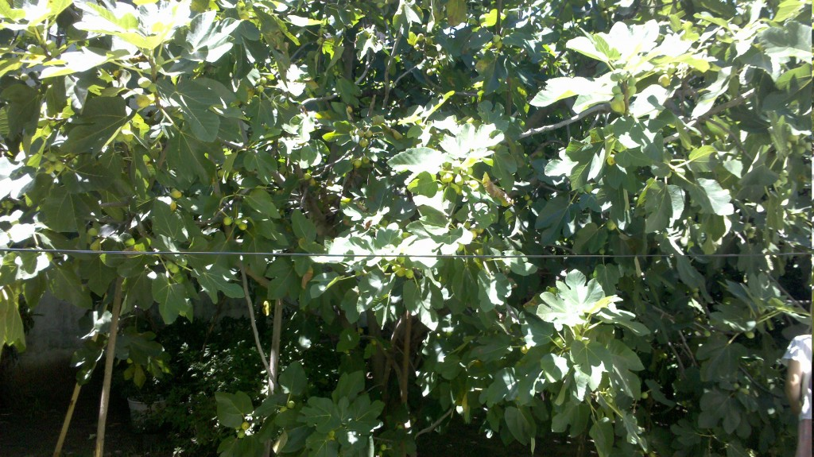
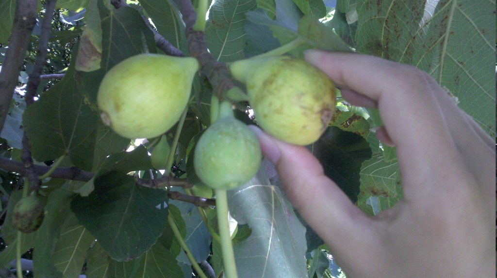

Dulce de higo
Voy viviendo a mi manera.
Si conviene regando. Pa' que crezca la higuera.
Pa' que crezca y de sombra,
pa' que dé sombra y frutos
y muchas primaveras,
y muchas primaveras.
Manolo García
Ya que el post más visitado de este blog es el del Dulce de mora, reincido publicando la receta del dulce de higo casero. Las fotos son de un día que estuvimos un par de horas, a la sobra de las hojas de la higera, juntando sus frutos.
{kind=link}
Ingredientes
{kind=link}
Por cada kg de higos, 400 gramos de azúcar blanca.
Preparación
Lavar los higos y dejarlos escurrir.
Cortar los higos en rodajas dejando afuera la piel marchita y el palito.
{kind=link}
Pesar los higos.
Poner en una olla y agregarle el azúcar.
{kind=link}
Dejarlo macerar mínimo 5 o 6 horas (se puede dejar toda la noche) en la heladera.
Cocinar a fuego bajo con un difusor de calor e ir revolviendo con cuchara de madera. Cuando empieza a hervir agregarle una cucharadita de bicarbonato de sodio cada 3 kilos de higo.
Cuando la cocción presenta un aspecto consistente, con aspecto brilloso y al pasar la cuchara por el fondo deja un surco permanente.
{kind=link}
{kind=link}
Una vez listo se puede guardar en frascos para ir consumiendo durante el año.
{kind=link}
Próximo post, Higos en almíbar.
Comentarios
Comments powered by Disqus